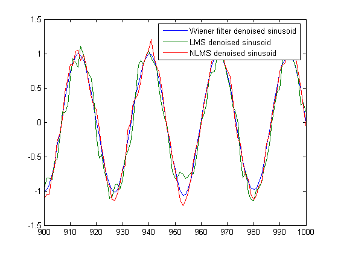
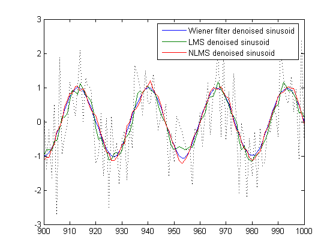
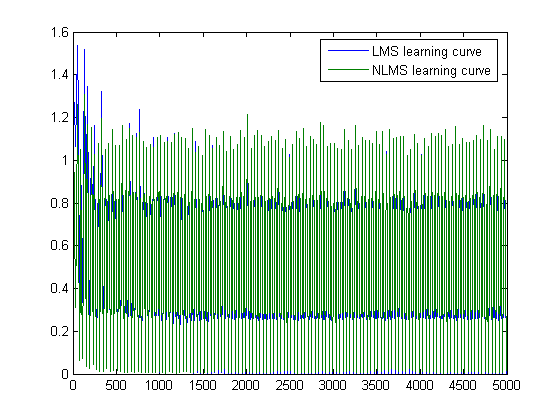
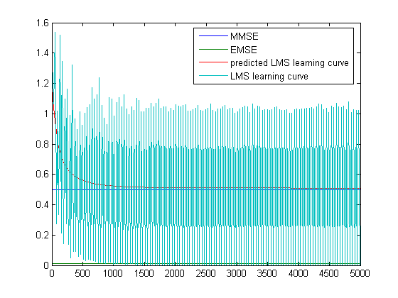

This demonstration illustrates how to use the adaptive filter algorithms provided in the Filter Design Toolbox.
We will use a very simple signal enhancement application as an illustration. While we demonstrate with two algorithms only, there are about 30 different adaptive filtering algorithms included with the Filter Design Toolbox.
To see a list of all algorithms available along with all the methods that are applicable to adaptive filters type "helpwin adaptfilt" or "help adaptfilt".
To get help on a specific algorithm you can type "helpwin adaptfilt/lms" for example.
We now provide a simple example.
We want to use an adaptive filter to extract a desired signal from a noise corrupted signal by cancelling the noise. The desired signal is a sinusoid
n = (1:1000)'; s = sin(0.075*pi*n);
We assume that the noise signal v1 is autoregresive.
v = 0.8*randn(1000,1); ar = [1, 1/2]; v1 = filter(1,ar,v);
The noise corrupted sinusoid is simply s + v1
x = s + v1;
We assume we have a moving average signal v2 that is correlated with v1. This will be used as the reference signal.
ma = [1, -0.8, 0.4 , -0.2]; v2 = filter(ma,1,v);
We will use two adaptive filters each with 7 taps (wieghts), an LMS filter, and a normalized LMS (NLMS) filter.
Type "helpwin adaptfilt/lms" and "helpwin adaptfilt/nlms" for further information on constructing LMS and NLMS adaptive filters.
L = 7; hlms = adaptfilt.lms(7); hnlms = adaptfilt.nlms(7);
All the LMS-like algorithm have a so-called step size which determines the amount of correction that is done as the filter adapts from one iteration to the next. Choosing the approprite step size is not always easy, a step size that is too small, will hamper convergence speed, while one that is too large may cause the filter to diverge. The Filter Design Toolbox includes algorithms to determine the maximum step size allowed for these algorithms while ensuring convergence.
Type "helpwin adaptfilt/maxstep" for more information.
[mumaxlms,mumaxmselms] = maxstep(hlms,x)
[mumaxnlms,mumaxmsenlms] = maxstep(hnlms); % Always equal to two
Warning: Step size is not in the range 0 < mu < mumaxmse/2:
Erratic behavior might result.
mumaxlms =
0.2270
mumaxmselms =
0.1356
The first output of maxstep is the value needed for the coefficients mean to converge, while the second one is the value needed for the mean squared coefficients to converge. However, choosing a large step size also results in large variations from the convergence values, so we choose smaller step sizes
hlms.step = mumaxmselms/30; % This can also be set graphically: inspect(hlms) hnlms.step = mumaxmsenlms/20; % This can also be set graphically: inspect(hnlms)
If we already know the step size we want to use, we can also set its value when we first create the filter: hlms = adaptfilt.lms(N,step);
Now that we have setup the parameters of the adaptive filters, we can filter the noisy signal. The reference signal, v2 will be the input to the adaptive filters, while x is the desired signal in this setup. The output of the filters, y will try to emulate x as best possible. However, since the input to the adaptive filter, v2, is only correlated with the noise component of x, v1, it can only really emulate this. The error signal, that is the desired x, minus the actual output y will thus constitute an estimate of the part of x that is not correlated with v2 namely s which is the signal we want to extract from x.
Type "helpwin adaptfilt/filter" for a complete description of filtering with adaptive filters.
[ylms,elms] = filter(hlms,v2,x); [ynlms,enlms] = filter(hnlms,v2,x);
For comparison, we compute the optimal FIR Wiener filter
bw = firwiener(L-1,v2,x); % Optimal FIR Wiener filter yw = filter(bw,1,v2); % Estimate of x using Wiener filter ew = x - yw; % Estimate of actual sinusoid
We now show the estimated sinusoid for each case
plot(n(900:end),[ew(900:end), elms(900:end),enlms(900:end)]); legend('Wiener filter denoised sinusoid',... 'LMS denoised sinusoid', 'NLMS denoised sinusoid');
As a reference, we show the noisy signal dotted
hold on plot(n(900:end),x(900:end),'k:') hold off
We can compare the Wiener filter coefficients with those of the adaptive filters. The adaptive filters will try to converge to the Wiener coefficients
[bw.' hlms.Coefficients.' hnlms.Coefficients.']
ans =
1.0221 0.8751 1.0411
0.3345 0.1201 0.3601
0.1217 -0.0118 0.1077
0.0483 -0.0183 0.0081
0.1179 0.0558 0.0420
0.0637 -0.0049 -0.0290
0.0216 -0.0235 -0.0222
The adaptive fiters have a "ResetBeforeFiltering" flag that can be used to reproduce experiments exactly. By default, the flag is "on", which means that the states and the coefficients of the filter are reset before filtering. For instance, the following two succesive calls produce the same output in both cases.
[ylms,elms] = filter(hlms,v2,x); [ylms2,elms2] = filter(hlms,v2,x);
To keep the history of the filter when filtering a new chunk of data, we must set the flag to "off". In this case, the final states and coefficients of a previous run are used as initial conditions for the next set of data.
[ylms,elms] = filter(hlms,v2,x); hlms.ResetBeforeFiltering = 'off'; [ylms2,elms2] = filter(hlms,v2,x); % No longer the same
Setting the flag to "off" can be useful when filtering large amounts of data which can be partioned into smaller chunks and then fed into the filter using a for-loop.
To analyze the convergence of the adaptive filters, we look at the so-called learning curves. These can easily be generated in the Filter Design Toolbox, but we need more experiments to obtain significant results. We will use 25 sample realizations of the noisy sinusoids.
n = (1:5000)'; s = sin(0.075*pi*n); nr = 25; v = 0.8*randn(5000,nr); v1 = filter(1,ar,v); x = repmat(s,1,nr) + v1; v2 = filter(ma,1,v);
We now compute the mean-square error. To speed things up, we only compute the error every 10 samples. First we need to reset the adaptive filters to avoid using the coefficients it has already computed and the states it has stored.
reset(hlms); reset(hnlms); M = 10; % Decimation factor mselms = msesim(hlms,v2,x,M); msenlms = msesim(hnlms,v2,x,M); plot(1:M:n(end),[mselms,msenlms]) legend('LMS learning curve','NLMS learning curve')
For the LMS and NLMS algorithms, the theoretical learning curves can also be computed, along with the minimum mean-square error (MMSE) the excess mean-square error (EMSE) and the mean value of the coefficients.
This may take a while.
reset(hlms); [mmselms,emselms,meanwlms,pmselms] = msepred(hlms,v2,x,M); plot(1:M:n(end),[mmselms*ones(500,1),emselms*ones(500,1),... pmselms,mselms]) legend('MMSE','EMSE','predicted LMS learning curve',... 'LMS learning curve')